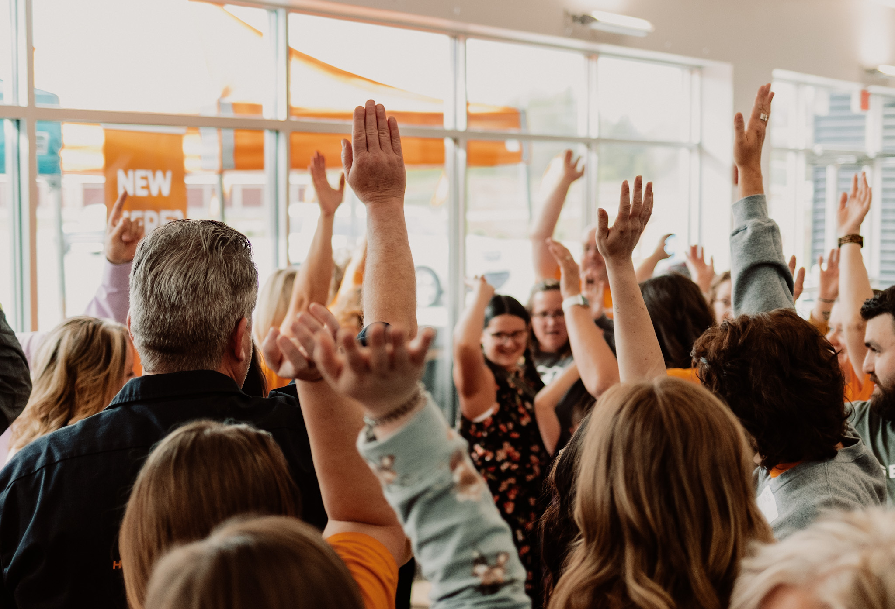
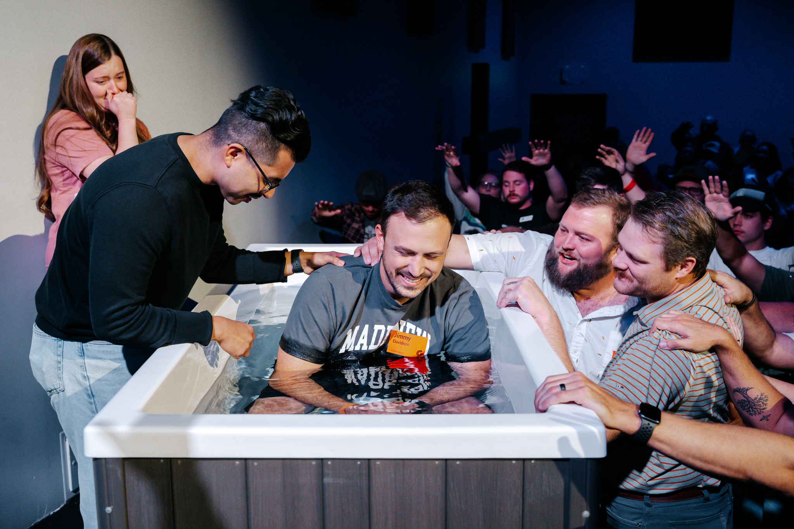
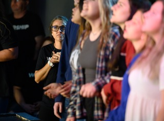

One Day
One Day is Landmark's signature coaching event — a full day hosted at one of our member churches where pastors and church leaders come together to learn, share honestly, and sharpen one another.

Global Missions
Landmark sends teams to Costa Rica each year to partner with Iglesia de la Ciudad and the For The City mission organization. These trips are more than service — they're transformational experiences that grow your faith and bind the network together.

Annual Retreat
Once a year, Landmark's pastors step away from the demands of ministry to rest, reconnect, and recharge together. The Landmark Retreat is a dedicated time for the network to go deeper in relationship — away from the pulpit, just as people.